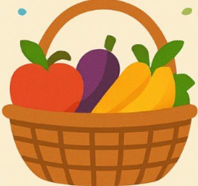
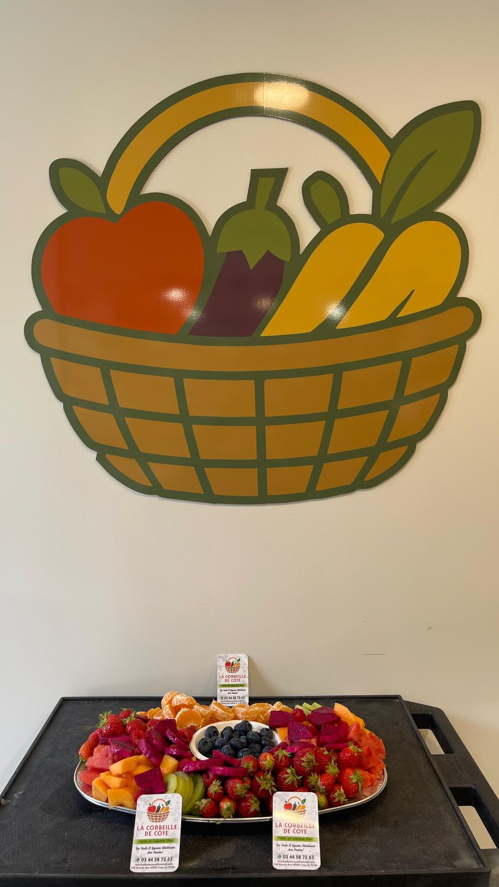

Fruits et légumes frais
Des fruits et légumes sélectionnés avec passion.

Découvrez notre sélection de fruits et légumes frais, choisis avec soin pour vous.
📍 40 Grande Rue, 60580 Coye-la-Forêt
📞 03 44 58 72 63
📞 Appeler| Lundi | 08h30 - 13h / 14h - 19h45 |
| Mardi | 08h30 - 13h / 14h - 19h45 |
| Mercredi | 08h30 - 13h / 14h - 19h45 |
| Jeudi | 08h30 - 13h / 14h - 19h45 |
| Vendredi | 08h30 - 13h / 14h - 19h45 |
| Samedi | 08h30 - 13h / 14h - 19h45 |
| Dimanche | 08h30 - 14h |